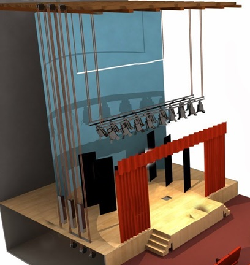

El escenario es donde ocurre la magia pero no todo se limita a este espacio y su telón; hay otras partes del teatro de gran importancia que no están tan a la vista, com por ejemplo:
A continuación veremos algunas de ellas.
Clica sobre las distintas partes de la foto de escenrio para que conozcas y entiendas paraz que sirve cada parte de un escenario

¿Qué sería del teatro sin el escenario? El escenario es el lugar donde los artistas hacen su magia y del cual existen numerosos tipos como arena, estilo italiano, laboratorio, isabelino, abierto y cerrado, entre otros.
Simplemente es una de las partes del teatro más evidentes y visibles porque es dónde se lleva a cabo la acción pero que a su vez deriva a otras muchas, como la escena.
Si has disfrutado en un espectáculo la desaparición de uno de los artistas en escena como por arte de magia, esto es posible gracias al cuarto de trampas o foso.
En esencia, es un piso inferior al cual se accede mediante otras partes del teatro como trampas dispuestas en el suelo o en el tablado del escenario.
Las bambalinas es un lienzo de tela que se extiende por toda la parte alta del escenario cuelga flotando sobre él. En su conjunto, las bambalinas forman parte del telar con el resto de telones y suelen colorearse o pintarse integrándose así en la decoración, también se usa de color negro. Otro objetivo importante, quizá su origen, es ocultar al público los altos de la caja escénica, ocupados entre otros recursos y dispositivos por las líneas de iluminación que intervienen en la representación. Actualmente no solo son de tela, pueden ser paneles hechos con armadura de madera y tela, fijos o movibles.
Asimismo, son los laterales del escenario, por los cuales circulan los artistas y operadores; este lugar no es visto por los espectadores durante los espectáculos.
Asimismo, son los laterales del escenario, por los cuales circulan los artistas y operadores; este lugar no es visto por los espectadores durante los espectáculos.
Estas son decoraciones funcionales que ayudan al artista a desaparecer de escena y hacer entradas.
Entre las partes de un teatro común, se conoce como embocadura a la abertura por la cual los espectadores disfrutan del espectáculo.
El cruce de escena o galería de cruce es un pasillo que se sitúa detrás del escenario, por el cual circulan los artistas, los operadores y todo el personal sin ser visto por el espectador.
El proscenio se ubica entre la fosa de la orquesta y la pared del proscenio.
La pared del proscenio es simplemente el muro que separa el escenario de la sala de espectadores.
El puente es una galería elevada, que normalmente se encuentra suspendida sobre el escenario donde se instalan las luces u otro equipo que requieran las diferentes partes de un teatro.
Tal como indica su nombre, piso del escenario, hace referencia al suelo normalmente tablado del escenario. También es conocido como tablas o tablado, de ahí la expresión “entre tablas” que hace alusión a las personas que viven del teatro.
La fosa de orqueta es un área hundida que se encuentra junto al proscenio, donde normalmente tocan las orquestas en las obras.
El telar o alturas de un teatro son áreas sobre la caja escénica donde pueden ir montados elementos de la escenografía, los telones y otros elementos.
También permite el montaje de equipo y elementos de manera suspendida, de forma que no sean visibles para el espectador hasta que sea requerido.
Los contrapesos y cuerdas son tan importantes como el tramoyista (encargado de realizar las preparaciones en un escenario para dar lugar a una actuación, se encarga de tareas como el manejo del decorado, tanto colocarlo como quitarlo y de la utilería), ya que serán sus aliados para crear la magia.
Los puentes de maniobras es una plataforma donde el tramoyista realiza su trabajo, también es conocida como galería de tiro.
La barra de focos o de luces es la parte donde se instalan las luces que se utilizan para iluminar la escena y a los actores.
La iluminación teatral juega un papel decisivo en la puesta en escena de cualquier representación permitiendo, por un lado, dejar ver correctamente a los actores y los elementos dispuestos en el escenario y, por otro, contribuyendo a crear atmósferas y determinar el tono emocional de una obra de teatro. Mediante las técnicas de luz, los directores escénicos pueden realzar diferentes puntos del escenario en cada momento y guiar al espectador en el itinerario de atención.1
La iluminación en el teatro requiere de una planificación estratégica para lograr los efectos visuales deseados y se hace mediante la selección de los equipos adecuados, su posición en el escenario, intensidad y color.
El ciclorama del teatro es un elemento fundamental en el mundo escénico, utilizado para crear efectos visuales y enriquecer la ambientación de las producciones teatrales. A lo largo de este artículo, exploraremos en profundidad qué es un ciclorama teatro, sus características, los contenidos que puede mostrar, las obras que lo han utilizado, los personajes y la ambientación que ayuda a construir, y mucho más.
El telón es el lienzo o cortina corredera que, en un teatro en otra sala de espectáculos, separa el espacio del público del escenario o de parte de él. Puede abrirse y cerrarse, bien en sentido vertical (como una persiana), o bien en sentido horizontal (como una cortina).
El llamado telón de boca es el grande que cierra la embocadura a la altura del proscenio; se mantiene cerrado antes del comienzo de la representación y durante el intermedio o los entreactos, a fin de ocultar al público los posibles cambios en la escenografía. El término telón también se usa para designar el final de la obra puesta en escena